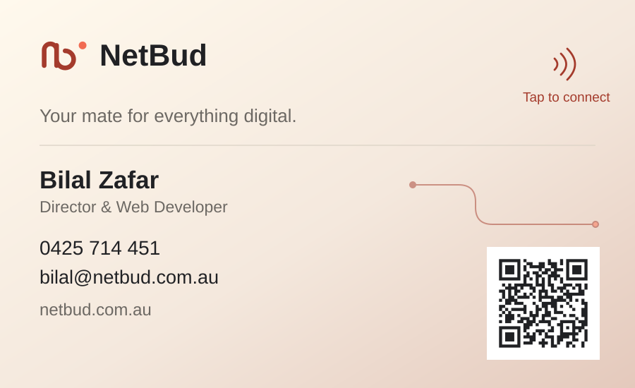
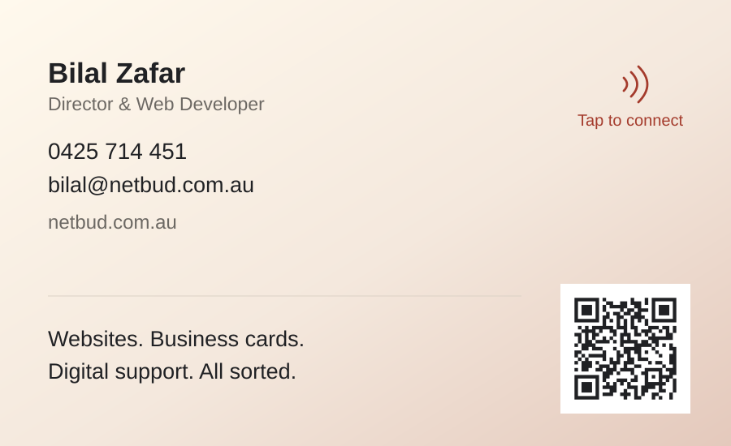

01–03 single-sided · 04–05 double-sided · 90 × 55 mm · matte · square corners


 02 Charcoal Studio
02 Charcoal Studio 03 Rust Edition
03 Rust Edition 04 Quiet Luxury Front
04 Quiet Luxury Front 05 Connected Back05 Connected Front
05 Connected Back05 Connected Front